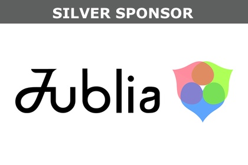
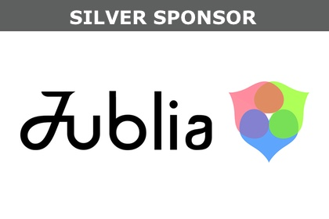
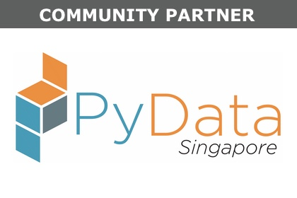
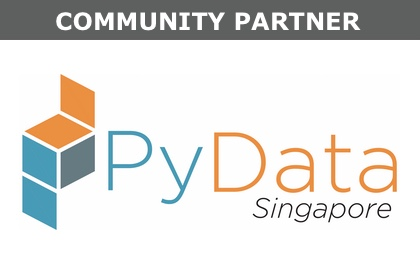
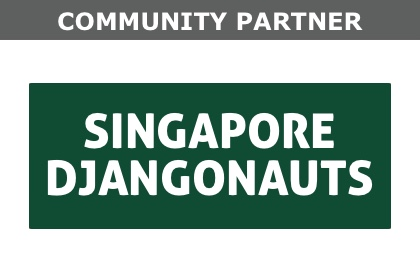
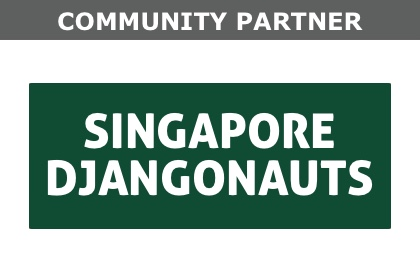

This tutorial is run by Dunman High School Students. It is meant to be a gentle introduction to Python 3. We will show how to develop a simple Hangman game covering basic Python programming paradigms like loops, lists and functions.
Learn how to use Jupyter, plus data analysis tools such as Pandas and NumPy, to perform some basic analyses on financial data. We'll also discuss a few ways in which time series analysis differs from regular statistics, and what Python tools to use for the job.
This workshop will introduce the attendees to the core concepts of machine learning. The scikit-learn package is introduced. Using real-life examples, the data modeling framework is introduced:
Data ingestion -> Feature creation -> Feature selection -> Model creation -> Model validation -> Model selection
Main Objectives of the workshop:
1) What is data analysis? 2) How to approach a data analysis problem? 3) What are the various questions one can ask given data? 4) How to perform data analysis and gain insights?.
By the end of the workshop, the attendees should be able to take a dataset and be confident to perform data analysis in a scientific manner .
This tutorial is chock-full of material that will help advanced beginners and intermediate Djangonauts with their Django projects. We'll introduce students to various tips, tricks, patterns, code snippets, and techniques that we've picked up over the years.
This workshop covers some useful tools and libraries from the open source world for financial data science, like pandas, plotly and more.
This talk will introduce the use of Python and several related modules (GDAL, Shapely, Fiona etc) to build a GIS-based data processing pipeline to retrieve the road network information required to build a rural-urban classification scheme for a region of interest. The speaker will highlight the main concepts used to build the data pipeline and run a simple demo to illustrate these concepts.
Deploying Python web applications is too hard. You either have to understand some arcane configuration syntax, or have to dig through an encyclopaedic volume of options. It shouldn't have to be this hard. In this talk you will see how 'warpdrive', with the right sort of magic, can make Python web application deployment easy.
Developing and maintaining a robust, scalable, high performance tcp server is usually quite tricky, even more so with Python where worker threads running on multiple cpu cores are absent due to GPI (Global Interpreter Lock). This talk covers the design and implementation of tcp/ip communication components, the way how to handle requests and assign the tasks efficiently.
Python has lots of scientific, data analysis, and machine learning libraries. But there are many problems when starting out on a machine learning project. Which library do you use? How can you use a model that has been trained in your production app? In this talk I will discuss how you can use TensorFlow to create Deep Learning applications and how to deploy them into production.
Antibiotics resistance is a serious biomedical issue and there are contradictory results on the prevalence of resistance following disuse of the specific antibiotics. However, it is not ethically possible to carry out such field experiments. Hence, digital organisms are used as proxy to gain insights into contradictory field evidence in attempt to provide crucial information into this debate.
This talk is geared towards Infrastructure and system engineers who are interested in learning about structuring a large monorepo codebase, consisting of multiple micro services that share many dependencies. This talk will introduce Pants as a build system for such large monolithic codebase and how it ties with today’s container ecosystem principles.
Two of Airbnb's most popular OSS projects are data tools made with Python: Airflow and Panoramix. I'll dive into how we leverage Python to deliver awesome functionality and why we care about contributing back to the community with open source.
We rarely use the power of visualisation to understand our models better. Model evaluation is largely limited to numerical summaries. Visualising models helps us better understand - shape of the model, impact of parameters on the model, impact of different input data , model fit and where it can be improved. This talk summarizes the learnings and key takeaways when communicating model results
I aim to cover the following aspects under the talk: 1. Using nltk with python (Overview of modules and data) 2. Basics of natural language processing (tokenisation, stemming, wordnet, pos tagging) 3. Sentiment Analysis (overview of classification methods, binary versus fuzzy classification) 4. Directions of sentiment analysis 5. Applications in discerning human emotions.
Jublia is a business matching SaaS solution for the events industry. A common challenge faced by us and this industry is managing different dynamic datasets of participant databases. That’s why we built Jublia DATASYNC - an easy-to-use data management tool via Google Sheets. I will be sharing how you can also build a simple-to-use tools for both techies and non-techies alike to manage databases.
Deep Learning is a hot topic, but has a steep initial learning curve. To ease the pain, a pre-configured virtual machine will be handed out, so that participants can run it on their own laptops using cross-platform open-source VirtualBox. In order to get the most out of the talk, participants should install VirtualBox on their laptops beforehand.
Raspberry Pi is a credit card size, low cost computer that could be used to build things ranging from supercomputers, to game consoles and robots. In this tutorial we will learn how to program a smart remote control for a robot. This is great for educators who would like to include robotics and computer programming into their curriculum.
By segmenting customers into groups with distinct patterns, businesses can target them more effectively with customized marketing and product features. I'll dive into a few machine learning and statistical techniques to extract insights from customer data, and demonstrate how to execute them on real data using Python and open-source libraries.
Where does Python fit in when it comes to MicroServices architecture? This talk will be about sharing my learnings as a Polyglot Developer about which languages suit best to build different types of MicroServices. With examples and real world scenarios I hope to make this session an introduction to MicroServices architecture from a Python Developer's point of view.
This talk will help beginners and intermediate developers about how to deploy their application on AWS cloud. It will help to plan auto scalability to handle unpredictable load on server to ensure app are up and running all times. Setup of alerts to get notify when something goes wrong to take needed action.
Using million playlists as sequences of songs, music2vec (written in Python) can map a song/playlist to a vector. It turns out these vectors make sense and keep the hidden structure. Imagine you like the song A, and dislike song B, but a playlist X. So the math is easy: your findings = song A - song B + playlist X. Voila, this is music2vec.
Have you thought how tech firms accomplish Infrastructure management at Scale (10's to 1000's of instances). Ansible is one of the answers out there and this talk will show you how you can do that easily and effectively.
Various local government agencies have released a treasure trove of open data. In particular, open geodata has been used to generate a number of cool map visualisations, such as a live taxi heatmap that went viral in Singapore. The Python package Folium makes it easy to use this geodata to create visualizations overlaid on a map.
Using Luigi and Scikit-Learn to create a Machine Learning Pipeline which trains a model and predict through a Rest API
It is not that long ago, that access to financial tools, e.g. for technical analysis, and access to quality financial data has been restricted to big institutions and those with deep pockets. We have come a long way since. Today, every student interested in financial markets can start his own algorithmic trading operation with a little bit more than a notebook and an Internet connection.
A number of Python libraries that we’ve written have become widely used. But they all started as personal projects: tools or utilities that we needed ourselves. In this talk we visit a number of case studies, both libraries of our own and of others.
In today's world of web application development, we've been given amazing, visionary tools and architecture patterns for quickly building gigantic structures that collapse under their own weight. This talk covers some of them and how to (hopefully) avoid them.
We are looking for sponsors!
If you can help make PyCon SG a success, please message us at conference@pycon.sg


 


 

 
